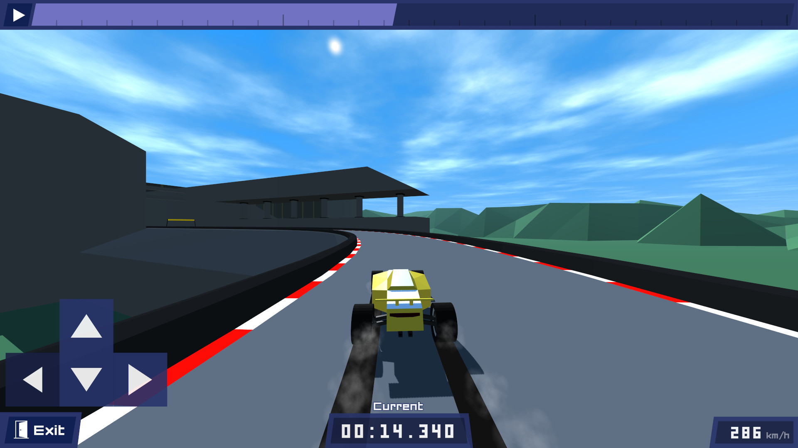
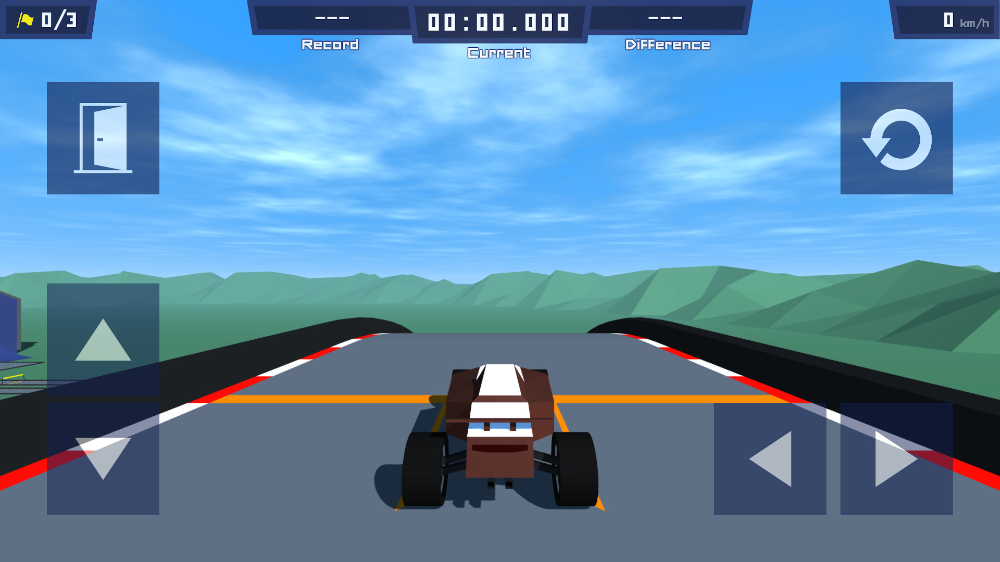

PolyTrack
{kind=link}
- Added: Watching replays from the leaderboard 
- Added: Button to navigate to your own position on the leaderboard
- Added: Option to filter out non-verified results on the leaderboard
- Added: Possibility to switch between multiple profiles
- Added: Export profiles to other devices
- Added: Server syncing for user profiles
- Added: Categories for track parts in the editor
- Added: Editor test keyboard shortcut
- Added: Editor pick hovered track part keyboard shortcut
- Added: Editor camera allow viewing from below the editing height
- Added: The track name is now shown when finishing a track
- Added: Hex color input for car colors
- Added: Option to move UI elements to the top or bottom of the screen
- Added: Hide/show game UI keyboard shortcut
- Added: Exit button after resetting car
- Added: Touch screen and mobile controls 
- Added: It should now be possible to install the game as a Progressive Web App (PWA)
- Added: New tracks
- Added: 100 new track parts
{kind=link}
{kind=link}
{kind=link}
{kind=link}
{kind=link}
- Changed: Custom tracks are now sorted by newest
- Changed: When importing the track will be opened automatically
- Changed: Removed the game logo from the track selection screen
- Changed: Removed the slope from the starting point
- Changed: Flag icon for checkpoint counter
- Changed: Updated Tracks 1 through 10
- Changed: Proper Discord logo
- Optimized: Multithreaded car simulation
- Optimized: Precalculate ghost simulation
- Optimized: Vertex colors for multicolor track parts
- Optimized: Wasm for physics simulation instead of asm.js
- Fixed: Tracks with certain names could not be imported
- Fixed: Color picker offset on small screens
- Fixed: Time being formatted incorrectly
- Fixed: Ordinal numbers in the leaderboard were incorrect
- Fixed: Cockpit camera toggle option did not work in the editor
- Fixed: Spectator camera did not work in the editor
- Fixed: Spectator camera incorrect rotation if initiated from the cockpit view
- Fixed: Car thumbnail wheel position
- Fixed: Car thumbnail had incorrect lighting
- Fixed: SFX volume affecting checkpoint sound effects
- Fixed: Ghost car volume being reset incorrectly
- Fixed: Nickname max length not counting UTF-8 characters correctly
Files
PolyTrack.zip Play in browser
Jul 29, 2024
PolyTrack-linux-x64.tar.gz 111 MB
Jul 29, 2024
PolyTrack-win32-x64.zip 117 MB
Jul 29, 2024
Get PolyTrack
Download NowName your own price
PolyTrack
A high speed low-poly racing game.
| Status | In development |
| Author | Kodub |
| Genre | Racing |
| Tags | 3D, Arcade, Difficult, Driving, High Score, Level Editor, Low-poly, Singleplayer, Speedrun |
| Languages | Arabic, German, English, Spanish; Castilian, French, Italian, Japanese, Korean, Polish, Portuguese (Portugal), Portuguese (Brazil), Russian, Turkish, Ukrainian, Chinese (Simplified), Chinese (Traditional) |
| Accessibility | Configurable controls |
More posts
- PolyTrack 0.5.0 - Winter & Desert38 days ago
- PolyTrack 0.4.2Nov 01, 2024
- PolyTrack is now on CrazyGames!Aug 15, 2024
- PolyTrack 0.4.1Aug 15, 2024
- PolyTrack 0.3.1Oct 29, 2023
- PolyTrack 0.3.0 - Checkpoints & leaderboardsOct 22, 2023
- PolyTrack 0.2.0Mar 21, 2023
Leave a comment
Log in with itch.io to leave a comment.